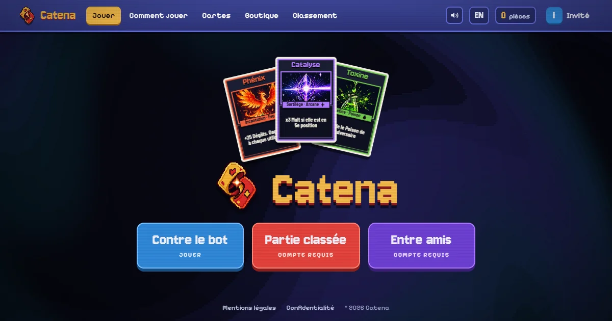
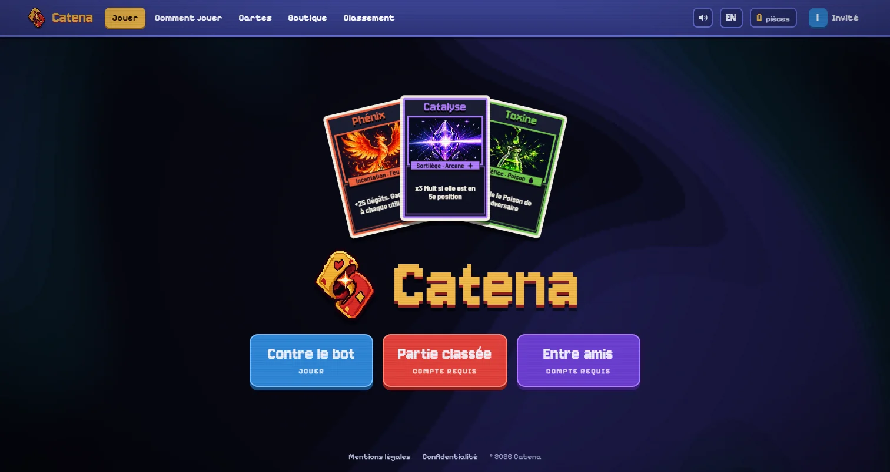
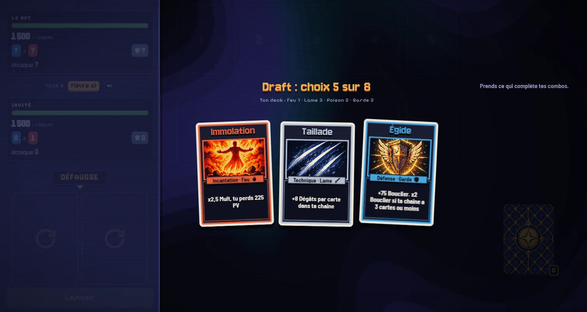
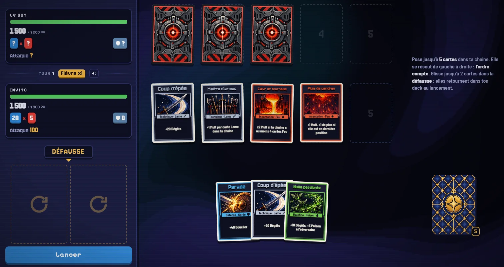
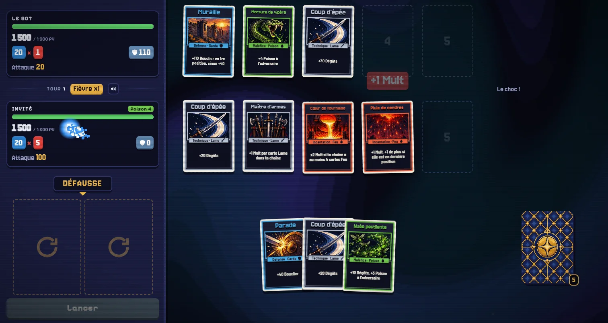
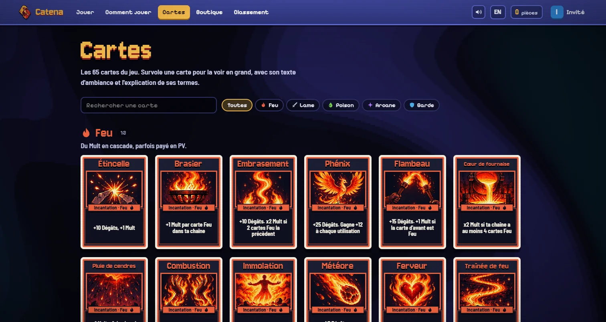
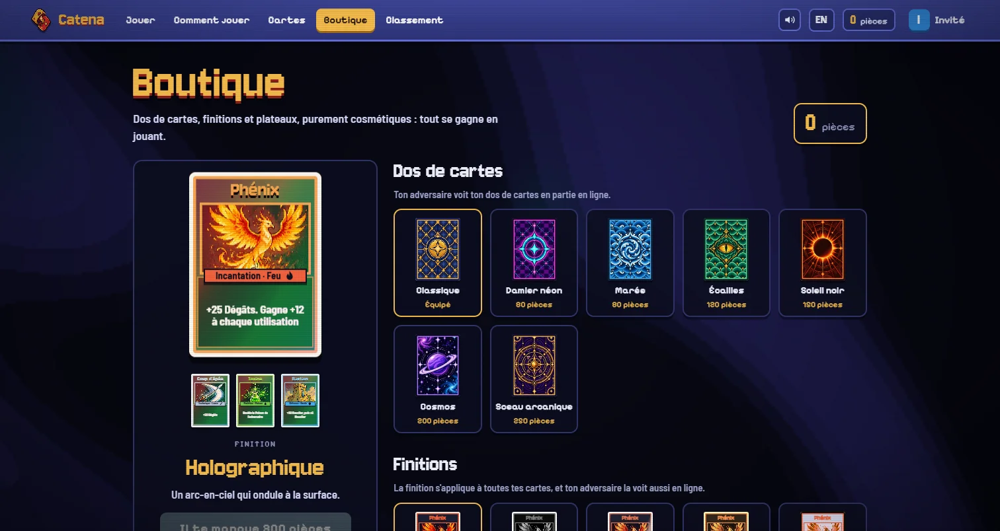

Un duel de cartes en un contre un dans le navigateur, avec le « juice » de Balatro : on drafte un deck, on enchaîne cinq cartes, et les chiffres explosent en cascade. A one-on-one card duel in the browser, with Balatro's juice: draft a deck, chain five cards, and watch the numbers cascade.

Balatro rend chaque coup lisible et jouissif : les jetons tombent, le multiplicateur grimpe, l'écran tremble. Catena reprend cette sensation, mais en duel. Chaque joueur drafte son deck (une carte parmi trois, huit fois), puis à chaque tour pose jusqu'à cinq cartes dans sa chaîne, résolue de gauche à droite : l'ordre compte.
Balatro makes every play readable and satisfying: chips drop, the multiplier climbs, the screen shakes. Catena takes that feeling into a duel. Each player drafts a deck (one card out of three, eight times), then each turn lays up to five cards in a chain that resolves left to right: order matters.
Les tours sont simultanés : les deux joueurs construisent en secret, puis les chaînes se révèlent et se résolvent emplacement par emplacement, en alternance. Pas d'attente en PvP, et du suspense à chaque révélation.
Turns are simultaneous: both players build in secret, then the chains are revealed and resolved slot by slot, alternating. No waiting in PvP, and suspense at every reveal.


L'attaque vaut Dégâts × Mult × Fièvre. La Fièvre monte à chaque tour (×1, ×1,6, ×2,2...) : les premiers tours sont prudents, les derniers explosifs. Le Bouclier absorbe l'attaque adverse, le Poison ronge à chaque fin de tour. Cinq familles ont chacune leur style : le Feu empile le Mult au prix de ses PV, la Lame enchaîne les Dégâts, le Poison pose des stacks, l'Arcane copie et double, la Garde convertit sa défense en attaque.
Attack is Damage × Mult × Fever. The Fever rises every turn (×1, ×1.6, ×2.2...): early turns are careful, late turns explosive. Shield soaks the opponent's attack, Poison eats away at the end of each turn. Five families each have their own style: Fire stacks Mult at the cost of HP, Blade chains Damage, Poison piles stacks, Arcane copies and doubles, Guard turns defense into offense.
Tout est fait pour qu'on sente chaque carte : ressorts sur les cartes, inclinaison 3D au survol, textes flottants, particules, secousse proportionnelle aux dégâts, sons synthétisés dont la hauteur monte pendant la cascade, et un fond animé en shader WebGL qui s'emballe avec les gros coups.
Everything is built so you feel each card: springs on the cards, 3D tilt on hover, floating numbers, particles, screen shake scaled to damage, synthesized sounds whose pitch climbs through the cascade, and an animated WebGL shader background that speeds up on big hits.


Une page Comment jouer avec des démos animées construites avec les vraies cartes et le vrai moteur, une galerie de toutes les cartes, un classement, un profil avec statistiques et historique. La boutique ne vend que du cosmétique (dos de cartes, finitions foil ou holographiques, couleurs du plateau), payé en pièces gagnées en jouant : tout le monde drafte dans la même réserve, sans pay-to-win.
A How to play page with animated demos built from the real cards and the real engine, a gallery of every card, a leaderboard, a profile with stats and history. The shop only sells cosmetics (card backs, foil or holographic finishes, board colors), paid with coins earned by playing: everyone drafts from the same pool, no pay-to-win.
Les 65 illustrations et les dos de cartes ont été générés par grilles, une par famille, puis découpés et convertis par script.
The 65 illustrations and the card backs were generated as grids, one per family, then sliced and converted by script.


Un moteur unique. Les règles tiennent dans un module JavaScript pur, sans DOM, partagé par le jeu, le serveur et un simulateur. Le client anime, le serveur arbitre, et les deux appliquent exactement les mêmes règles.
One engine. The rules live in a pure JavaScript module, no DOM, shared by the game, the server and a simulator. The client animates, the server referees, and both apply exactly the same rules.
Équilibré au simulateur. Un simulateur fait jouer le bot contre lui-même des milliers de fois et mesure le taux de victoire de chaque famille et de chaque carte, la durée des parties et l'attaque par tour. C'est lui qui a montré que la première règle de Fièvre ne produisait aucun crescendo. Six variantes testées plus tard, la règle retenue multiplie l'attaque typique par 3,2 entre le premier et le sixième tour, avec des familles entre 48 et 53 % de victoires.
Balanced by simulation. A simulator plays the bot against itself thousands of times and measures the win rate of every family and card, game length and attack per turn. It showed that the first Fever rule produced no crescendo at all. Six variants later, the chosen rule multiplies the typical attack by 3.2 between the first and sixth turn, with families between 48 and 53% win rate.
Un PvP arbitré par le serveur. Le serveur Node tient les decks, tire les offres, garde les mains secrètes et ne révèle les chaînes que lorsque les deux joueurs ont validé. Les clients suivent la partie en Server-Sent Events et agissent par POST. Un joueur absent est joué par la logique du bot, trois absences valent abandon. Classement Elo, salles entre amis avec un lien à partager.
Server-refereed PvP. The Node server holds the decks, draws the offers, keeps hands secret and only reveals the chains once both players have locked in. Clients follow the match over Server-Sent Events and act through POST requests. An absent player is played by the bot's logic, three absences count as a forfeit. Elo ranking, friend rooms with a shareable link.
Le reste. Aucun build : HTML, CSS et modules ES servis tels quels. PostgreSQL en production, et PGlite (le même moteur en WebAssembly) en local et dans les tests. Comptes avec mots de passe hachés en scrypt, sessions dont seul le hash est stocké, CSP stricte, polices hébergées sur le serveur, e-mails par Brevo. Une image Docker que Coolify reconstruit à chaque push.
The rest. No build step: HTML, CSS and ES modules served as is. PostgreSQL in production, and PGlite (the same engine in WebAssembly) locally and in tests. Accounts with scrypt-hashed passwords, sessions stored only as hashes, a strict CSP, self-hosted fonts, email through Brevo. A Docker image that Coolify rebuilds on every push.
# js/rules.js, shared by the client, the server and the simulator
fever(turn) = 1 + 0.6 * (turn - 1)
attack = damage * mult * fever(turn)
shield = shield * fever(turn)
poison = 8 HP per stack at the end of each turnLes parties en ligne vivent en mémoire : un redéploiement interrompt celles en cours (les comptes, pièces et historiques sont en base). Une seule instance du serveur, puisque le matchmaking est en mémoire. Les parties contre le bot tournent dans le navigateur, donc leur résultat est déclaré par le client : ça ne rapporte que des pièces cosmétiques, plafonnées par heure.
Online matches live in memory: a redeploy interrupts the ones in progress (accounts, coins and history are in the database). A single server instance, since matchmaking is in memory. Bot matches run in the browser, so their result is reported by the client: they only earn cosmetic coins, capped per hour.